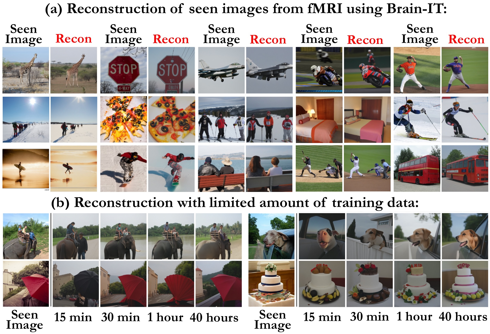
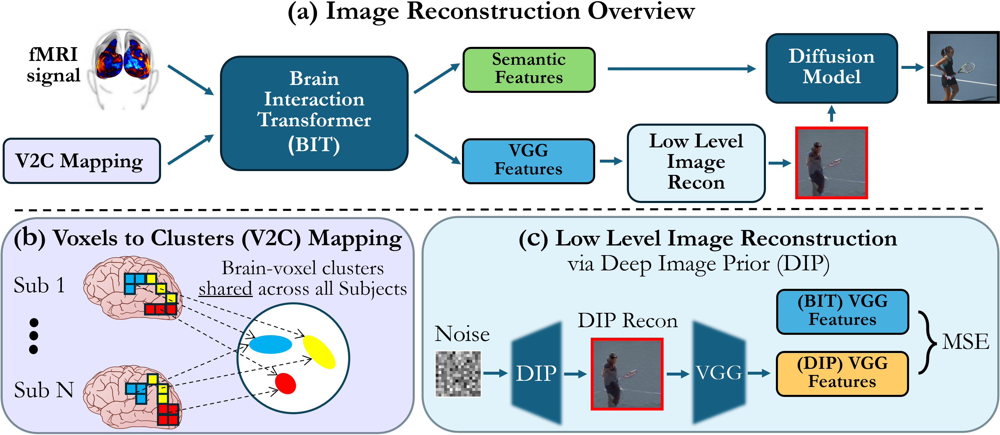
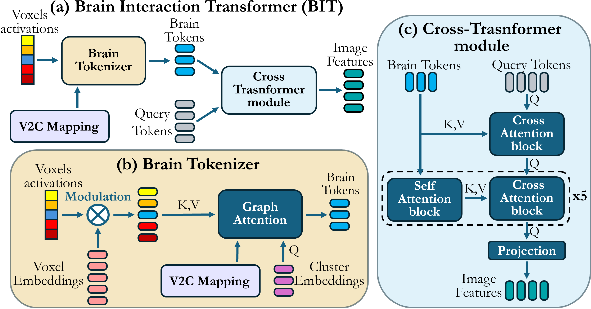
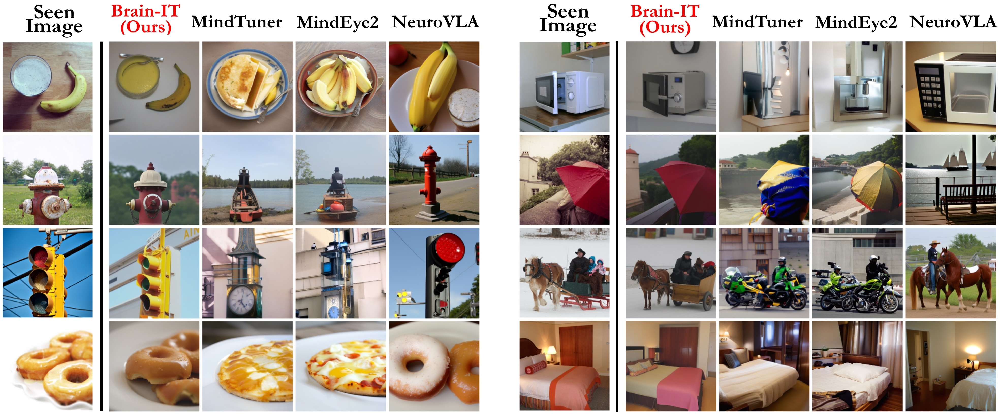
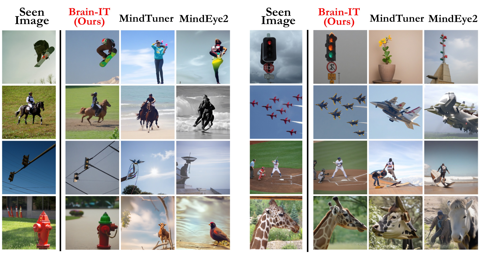
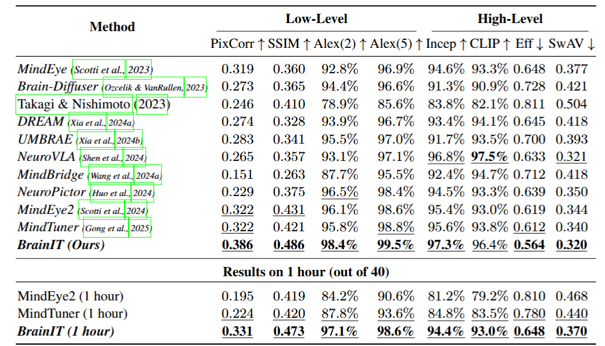

* Denotes Equal Contribution
—

(a) Image reconstructions using the full NSD dataset (40 hours per subject). (b) Efficient Transfer-learning to new subjects with very little data: Meaningful reconstructions are obtained with only 15 minutes of fMRI recordings. (Results on Subject 1)
Reconstructing images seen by people from their fMRI brain recordings provides a non-invasive window into the human brain. Despite recent progress enabled by diffusion models, current methods often lack faithfulness to the actual seen images. We present Brain-IT, a brain-inspired approach that addresses this challenge through a Brain Interaction Transformer (BIT), allowing effective interactions between clusters of functionally-similar brain-voxels. These functional clusters are shared by all subjects, serving as building blocks for integrating information both within and across brains. All model components are shared by all clusters & subjects, allowing efficient training with a limited amount of data. To guide the image reconstruction, BIT predicts two complementary localized patch-level image features: (i) high-level semantic features, which steer the diffusion model toward the correct semantic content of the image; and (ii) low-level structural features, which help to initialize the diffusion process with the correct coarse layout of the image. BIT’s design enables direct flow of information from brain-voxel clusters to localized image features. Through these principles, our method achieves image reconstructions from fMRI that faithfully reconstruct the seen images, and surpass current state-of-the-art approaches both visually and by standard objective metrics. Moreover, with only 1 hour of fMRI data from a new subject, we achieve results comparable to current methods trained on full 40 hour recordings.

Overview of Brain-IT pipeline showing the Brain Interaction Transformer (BIT) architecture with V2C mapping, semantic and low-level branches.
The Brain Interaction Transformer (BIT) transforms fMRI signals into Semantic and VGG features using a shared Voxel-to-Cluster (V2C) mapping. Two branches are applied: (i) the Low-Level branch reconstructs a coarse image from VGG features, used to initialize the (ii) Semantic branch, which uses semantic features to guide the diffusion model. Each voxel from every subject is mapped to a functional cluster shared across subjects, enabling integration within and across brains. Our Brain-IT pipeline thus reconstructs images directly from fMRI activations by first predicting meaningful image features with BIT, then refining them through a diffusion model guided by semantic conditioning and a Deep Image Prior (DIP) that ensures structural fidelity.

BIT architecture showing the Brain Tokenizer and Cross-Transformer modules for processing fMRI signals into image features.
The BIT model predicts image features from voxel activations (fMRI). The Brain Tokenizer maps the fMRI activations into Brain Tokens, which are representations of the aggregated information from all the voxels of a single cluster (one token per cluster). The Cross-Transformer Module integrates information from the Brain Tokens to refine their representation, and employs query tokens to retrieve information from the Brain Tokens and transform it into image features, with each query token predicting a single output image feature.

Qualitative comparisons on Subject 1 with 40-hour training data. Brain-IT is compared to 3 leading methods, yielding reconstructions that better preserve both semantic content and low-level visual properties.

Reconstructions with 1 hour of subject-specific data. Brain-IT is compared against MindEye2 & MindTuner, demonstrating greater fidelity to the seen images.

Low- and high-level metrics comparing Brain-IT with other reconstruction methods. Results averaged across Subjects 1,2,5,7 from NSD. Brain-IT outperforms all baselines in 7 of 8 metrics.
Brain-IT demonstrates strong semantic fidelity and structural accuracy across multiple evaluation metrics. Importantly, with just 1 hour of data, Brain-IT is comparable to prior methods trained on the full 40 hours.